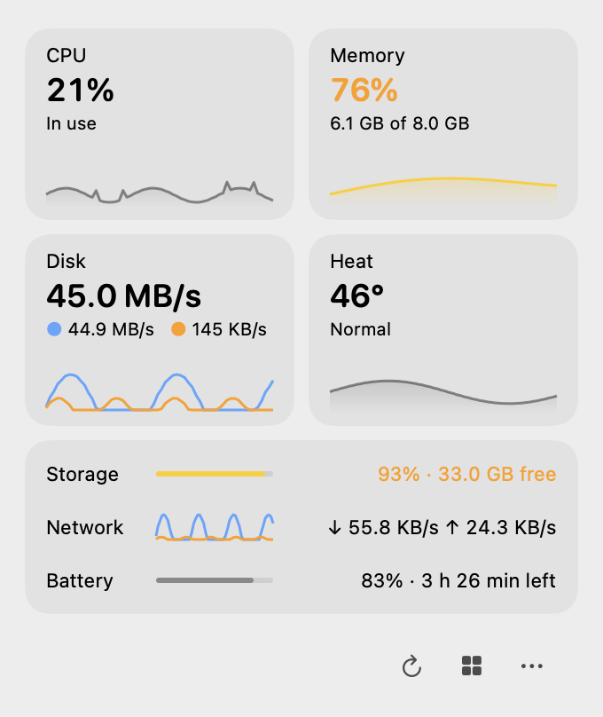
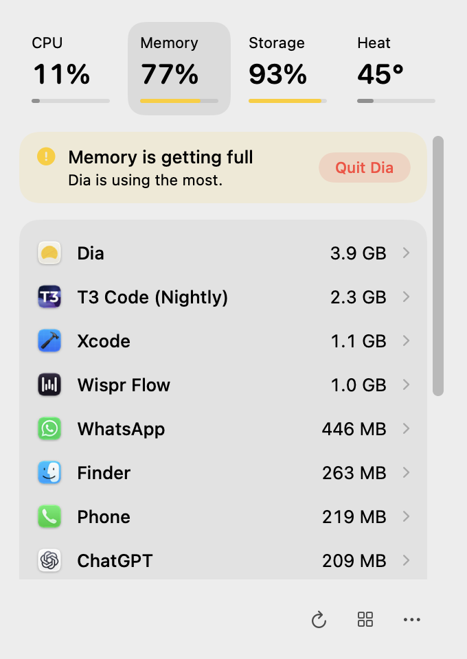

What is eating your Mac, and can you stop it?
Vital sits in your menu bar and answers that one question. Click it to see CPU, memory, storage and heat, the apps responsible, and Quit them safely.
Free and open source (MIT). macOS 14 or later, Apple silicon. Signed and notarized by Apple.

Small enough to forget it is running
12 MB of memory and almost no CPU while the panel is closed. About 27 MB while you are looking at it.
Measured on a MacBook Pro with an M3. Vital reads the system directly instead of running ps or top, backs off when your Mac is busy, and sends nothing anywhere. The numbers.
Tap a vital, see who is using it
Each of CPU, memory, storage and heat opens a ranked list of apps. Google Chrome and its 96 helpers are one row with one figure, so the answer to “what is using my memory?” fits on one line.

Made to answer, not to decorate
Four vitals, one list of apps, and a Quit button where you need it.
Quit with confidence
Quit asks the app to save first, and Force Quit asks you to confirm. System processes are protected. A process stuck in the kernel is reported as stuck instead of pretending it quit.
Quiet until something is wrong
Colour appears only when a vital needs attention, and that vital then names the app to blame. The menu bar icon shows the same thing, and its heartbeat grows with the load, so it never relies on colour alone.
Fan control, if you want it
On MacBooks with fans, set a manual speed with a slider after a one-time approval. Quitting Vital returns the fans to Automatic, and the helper does it too if anything goes wrong.
Private by default
No telemetry, no accounts, no permission prompts. The only network request is the update check, and only when you choose Update Software.
Honest numbers
If a Mac has no temperature sensor, Vital says “n/a” rather than inventing a figure. Apps macOS will not let it read appear as one approximate row.
A command line for you and your AI agents
vital prints what Vital sees as text, or as JSON with --json. It is read-only: it reports and never quits anything, so an agent can run it without asking first.
# what is wrong right now $ vital status Memory is getting full. Dia is using the most. CPU 18.6% of 8 cores Memory 75.3% 6.0 GB of 8.0 GB, pressure elevated Storage 93.3% full 32.9 GB available of 494 GB Heat nominal, hottest 42°C # who is responsible, helpers included $ vital apps --by memory -n 3 APP PROCESSES CPU MEMORY POWER Dia 30 processes 0.2% 3.8 GB 0.0 W T3 Code (Nightly) 19 processes 2.7% 1.5 GB 0.1 W Xcode 7 processes 11.4% 1.2 GB 0.2 W # the last hours, from the 24 hour record Vital keeps $ vital history cpu --range 6h --json
Install
Vital is signed with a Developer ID and notarized by Apple. It needs macOS 14 or later on Apple silicon.
Homebrew
brew tap soumyyy/vital https://github.com/soumyyy/vital && brew install --cask vitalnpm
npx vital-mac installDownload
Vital.dmg. Open it and drag Vital into Applications.